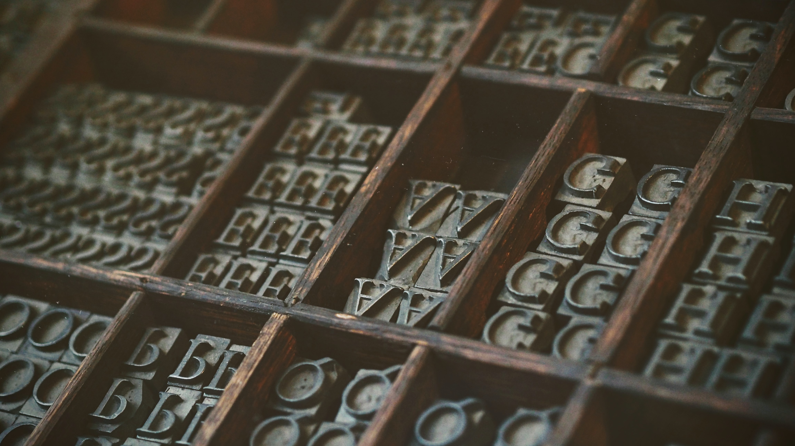

Type Review: Dunbar
Well, it’s April, and that means another blog post! As I mentioned in my first post, I love typography and want to share about it. Last time I told you all about Baskerville, a classic serif typeface that can be used pretty much everywhere. Now we’re going to switch gears to the sans serif side of the aisle and look at Dunbar.
History
Dunbar is a fairly recent invention, inspired by the typeface Erbar-Grotesk. Erbar-Grotesk was designed by a German typographer Jakob Erbar. He began work on it in 1914, but it wasn’t released for use until 1926. Erbar stated that he made this font in a search for a sans serif that would be simplified and modern but still beautiful. He used a geometrical calligraphy, a seeming oxymoron. It quickly became popular in the U.S. but was then overshadowed by Helvetica.
In 2015, typographer CJ Dunn created Dunbar Low as a new form of Erbar-Grotesk that would cater to a more technologically savvy world. In this typeface he captured both geometry and variation. He based the proportions off of traditional metal type used in printing presses, but used sharp corners and a low x-height to draw attention to the vertical strokes. In creating Dunbar, Dunn started with a display type and then added a huge selection of weights and text varieties.

Image by Christin Hume on Unsplash
Distinctives
As I mentioned above, Dunbar has a low x-height, which means that the lowercase letters are a good deal shorter than the tall strokes and upper-case letters. Often, this can make the font feel condensed and dark, but Dunn was intentional to create really wide and open letterforms. That being said, Dunbar was created with three different x-heights for a designer to choose from.
Another interesting aspect of the Dunbar typeface is that it was one of the first variable fonts. Usually each weight and style (bold, italics, etc.) comes as its own file, and each file can be quite large as well. However, a variable typeface allows a designer to download one small file that contains all the available weights and styles. This allows for a much more flexible graphic design experience and creativity during the work in progress. Additionally, Dunbar was created to adjust for layouts so that a slight weight or size change won’t shift an entire layout.
Good Pairings
Dunbar, though beautiful in itself, also pairs well with other typefaces. The two most important parts of pairing fonts are contrast and commonalty, as I discussed with Baskerville. To pair well, both typefaces should have the same internal guide, the same general baseline of shape, otherwise they will clash. On the other hand, they do need to be different in some way, otherwise you might as well just use one typeface.
As Dunbar comes in so many diverse weights, x-heights, and styles, it’s hard to give specifics. A thinner weight in Dunbar will probably go with a thicker other typeface. As Dunbar is sans serif, it will probably go well with a serif typeface.
Image by Natalia Yakovleva on Unsplash
That’s all I have for now. I’d love to hear what you know about Baskerville and what other typefaces pair well with it. Or give me some of your favorite typefaces! Note: I will have a comment box eventually, I’m just still working on setting it up.